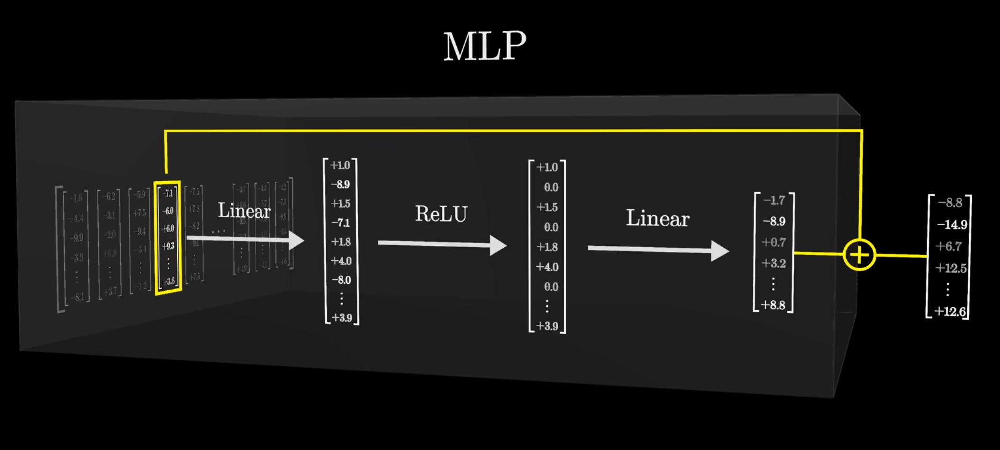
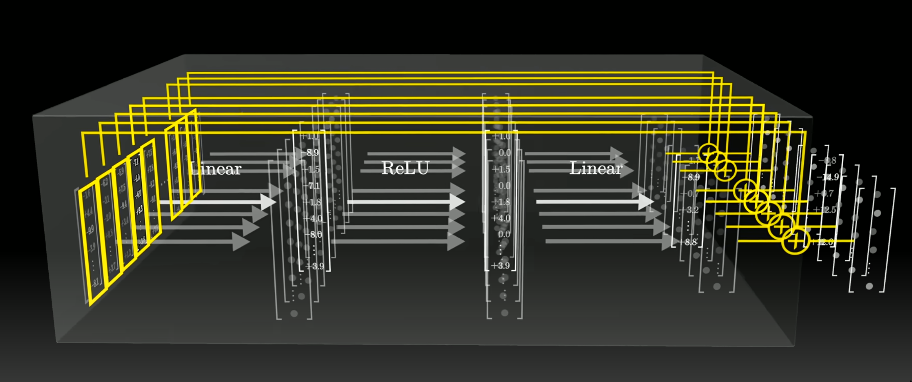
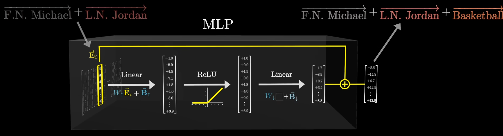
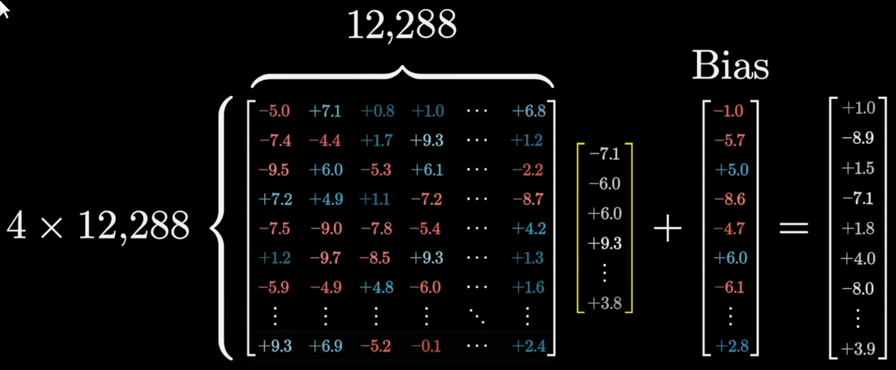
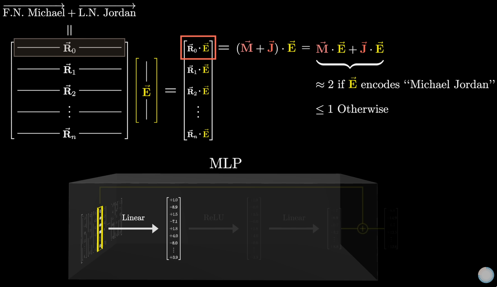
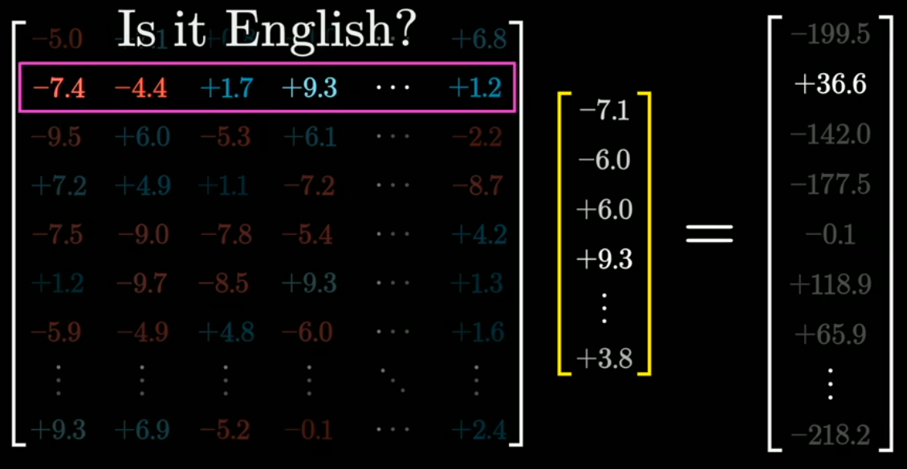
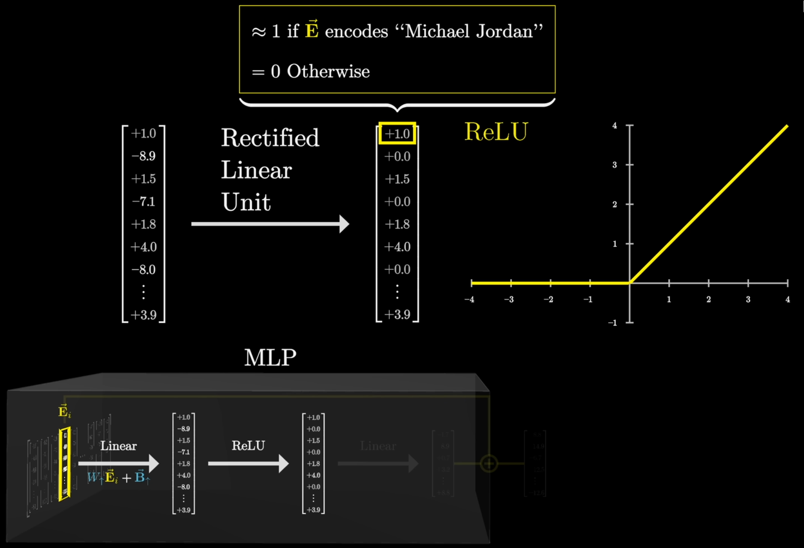
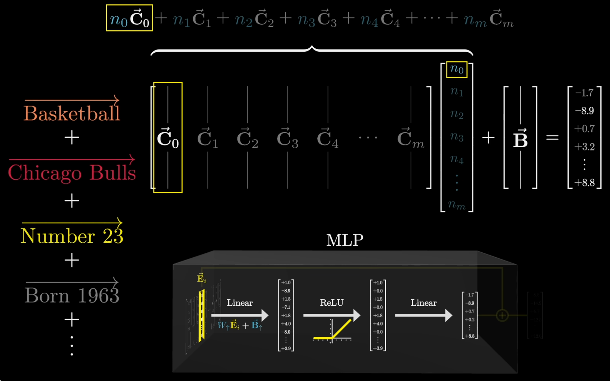

Video: https://www.youtube.com/watch?v=9-Jl0dxWQs8&list=PLZHQObOWTQDNU6R1_67000Dx_ZCJB-3pi&index=9&ab_channel=3Blue1Brown
Where do the majority of the parameters live in a transformer?
The MLP block
Design of MLP in the transformer?
- MLP is a two-layer feedforward neural network
- First layer is a linear transformation followed by a ReLU activation function
- Second layer is another linear transformation
- Output of second layer is added to the output of the attention block (our input embedding)
- Output of MLP is the output of the transformer block
- MLP is applied to each token in the input sequence

Done in parallel:

What at a high level is the purpose of the MLP block in a transformer?
To add more semantic meaning to the embedding outputted from the attention block

- In the above image, if our embedding represents the idea "Michael Jordan", the MLP will add a direction vector that represents the idea of "Basketball" to our embedding vector
- This will transform our embedding vector to represent the idea "Michael Jordan" in the context of basketball
- As opposed to "Michael Jordan" the actor for example
What is the design of the first layer of the MLP? What are its inputs and outputs?
- W↑ dim: (4⋅12,288)×12,288
- Input: embedding
- Output: higher dimension space
- Ei dim: 12,288
- B↑ dim: 12,288
W↑Ei+B↑

What does the first layer of the MLP do?
- W↑ dim: (4⋅12,288)×12,288
- Input: embedding
- Output: higher dimension space
- Each row of the first layer matrix W↑ can be thought of as a question
- Dot product of each row with the input embedding tells us how much the input embedding is aligned with the question
- If dot product ≈0, then the input embedding is not aligned with the question
- If dot product ≫0, then the input embedding is aligned with the question
- If dot product ≪0, then the input embedding is aligned with the opposite of the question
- Each row probes features of the embedding being processed


What's immediately after the first layer of the MLP?
- ReLU activation function
- But it's not differentiable at 0
- For smoothness, a GeLU activation function is used
- where GeLU is differentiable at 0 unlike ReLU
What does the ReLU intuitively do in the MLP?
- What does dot product do?
- Dot product of each row with the input embedding tells us how much the input embedding is aligned with the question
- If dot product ≈0, then the input embedding is not aligned with the question
- If dot product ≫0, then the input embedding is aligned with the question
- If dot product ≪0, then the input embedding is aligned with the opposite of the question
- ⟹ Anything <0 or anything that doesn't align with the question is set to 0
- So >0 values are kept (active)
- So ≤0 values are not kept (in active)

What is the design of the second layer of the MLP? What are its inputs and outputs?
- W↓ dim: 12,288×(4⋅12,288)
- Input: higher dimension space
- Output: embedding
- Input dim: 4⋅12,288
- Higher dimensional "embedding"
- B↓ dim: 12,288
W↓(ReLU(W↑Ei+B↑))+B↓
What does the second layer of the MLP intuitively do?
-
Design of second layer:
- W↓ dim: 12,288×(4⋅12,288)
- Input: higher dimension space
- Output: embedding
- Input dim: 4⋅12,288
- Higher dimensional "embedding"
- B↓ dim: 12,288
-
W↓: projects the higher dimensional space back to the original embedding space by taking a linear combination of vectors in the lower dimensional space
-
Each column vector of W↓ can be thought of as a direction vector and represents an idea
- Taking a linear combination of these direction vectors gives us a new embedding that represents the idea of the direction vectors incoporating knowledge from the higher dimensional space

So where are facts stored?
- In the higher dimensional space represented by W↓ and W↑
What is the formula for the output of the MLP block?
(W↓(ReLU(W↑Ei+B↑))+B↓)+Ei
What occurs in the deeper layers of the transformer? After several layers of attention and MLP blocks?
- Similar to CNN's, the deeper layers of the transformer learn more abstract features
- The first layer might learn edges, the second layer might learn shapes, the third layer might learn objects, etc.
- In a transformer: the first layer might learn words, the second layer might learn phrases, the third layer might learn sentences, etc.
Why in attention do we project into a smaller dimensional space while in MLP we project into a higher dimensional space?
- Attention: We're looking for compressed representations of the embedding to effectively
- Query: Ask the right question
- Key: Find the right information
- Value: Use the right information
- MLP: We're looking for a richer/higher dimensional representation of the embedding to add more meaning to the embedding
How many parameters are there in GPT3?
Think of the dims of the matrices for:
- Embedding: WE
- Key: WK
- Query: WQ
- Value: V↓
- Output: V↑
- Up-projection: W↑
- Down-projection: W↓
- Unembedding: Wunembed
You can ignore bias and layer norm parameters
- Embedding: dembed⋅dvocab
- 12,288⋅50,257=617,558,016
- Key: dquery⋅dembed⋅nheads⋅nlayers
- 128⋅12,288⋅96⋅96=14,495,514,624
- Query: dquery⋅dembed⋅nheads⋅nlayers
- 128⋅12,288⋅96⋅96=14,495,514,624
- Value: dvalue⋅dembed⋅nheads⋅nlayers
- 128⋅12,288⋅96⋅96=14,495,514,624
- Output: dembed⋅dvalue⋅nheads⋅nlayers
- 12,288⋅128⋅96⋅96=14,495,514,624
- Up-projection: dneurons⋅dembed⋅nlayers
- (4⋅12,288)⋅12,288⋅96=57,982,058,496
- Down-projection: dembed⋅dneurons⋅nlayers
- 12,288⋅(4⋅12,288)⋅96=57,982,058,496
- Unembedding: dvocab⋅dembed
- 50,257⋅12,288=617,558,016
Total parameters in multi-head attention:
617,558,016+4⋅14,495,514,624+2⋅57,982,058,496+617,558,016=175,181,291,520
⟹175 billion parameters
- Embedding params: 617,558,016
- 175181291520617558016≈0.35%
- Attention params: 4⋅14,495,514,624=57,982,058,496
- 17518129152057982058496≈33%
- MLP params: 2⋅57,982,058,496=115,964,116,992
- 175181291520115964116992≈66%
- Unembedding params: 617,558,016
- 175181291520617558016≈0.35%
What is superposition in relation to transformers?
- Adding a component in one dim doesn't affect the other dims
- So the higher the dims, the more components from other dims we can add while adding on meaning to the embedding
- If vectors are exactly orthogonal (90∘)
- In a 3 dim space, we can only add 3 components in the vectors are exactly orthogonal to each other
- In an N dim space, we can only add N components in the vectors are exactly orthogonal to each other
- If vectors can be in the range of 89∘ to 91∘, then we can add more components
- In a 3 dim space, we can only add 3 components in the vectors are exactly orthogonal to each other
- There isn't much wiggle room
- In an N dim space, exp(N) components can be added
- There is a lot of wiggle room
- We can squeeze in more vectors that are roughly orthogonal to each other
- This implies that each additional dim carries exponentially more information
- This is why for a 12,288 dim space, we can add a lot of components to the embedding vector
- So if we have 10x more dims, this doesn't correspond to 10x more components, it means exp(10) more components
- Which is probably why model performance scales with size
Johnson-Lindenstrauss Lemma
- N: number of dims
- Choose multiple vectors, each pair between 89∘ and 91∘ apart.
→Maximum # of vectors: ≈exp(ϵ⋅N)